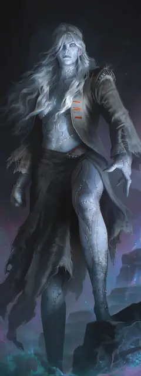

Чудовище Морденхайм
Mordenheim’s Monster
Средний Конструкт, Нейтральный

Класс Защиты 18 Инициатива +7 (17)
Хиты 161 (19к8 + 76)
Скорость 40 футов
| мод | спас | ||
|---|---|---|---|
| СИЛ | 22 | +6 | +10 |
| ЛОВ | 16 | +3 | +7 |
| ТЕЛ | 19 | +4 | +4 |
| мод | спас | ||
|---|---|---|---|
| ИНТ | 14 | +2 | +2 |
| МДР | 10 | +0 | +0 |
| ХАР | 5 | −3 | −3 |
Сопротивление урону Дробящий, Колющий, Рубящий
Иммунитеты Электричество, Яд; Испуганный, Истощение, Окаменевший, Отравленный, Очарованный, Парализованный
Чувства Тёмное зрение 60 футов, пассивное Восприятие 10
Языки Общий плюс ещё один язык
Опасность 12 (8 400 опыта; БВ +4)
Особенности
Улучшенное поглощение молний. Всякий раз, когда чудовище должно получить урон Электричеством, оно восстанавливает Хиты в количестве, равном нанесённому урону Электричеством, а его Скорость увеличивается на 40 футов до конца его следующего хода.
Неизменяемая форма. Чудовище не может перевоплощаться и быть перевоплощено.
Сопротивление магии. Чудовище совершает с Преимуществом спасброски от заклинаний и прочих магических эффектов.
Действия
Мультиатака. Чудовище совершает две атаки Размашистым ударом и использует Раздавливание или Швыряние.
Размашистый удар. Бросок рукопашной атаки: +10, досягаемость 5 фт. Попадание: 13 (2к6 + 6) Дробящего урона плюс 7 (2к6) урона Электричеством. Если цель — существо Среднего размера или меньше, она Схвачена (Сл освобождения от захвата 18) одной из двух рук.
Раздавливание. Спасбросок Силы: Сл 18, одно Схваченное чудовищем существо. Провал: 13 (2к6 + 6) Дробящего урона плюс 7 (2к6) урона Электричеством, и цель Опутана и задыхается, пока захват не окончен.
Швыряние. Чудовище бросает Схваченное им существо в видимое им пространство в пределах 30 футов от себя (но не в воздухе). Спасбросок Ловкости: Сл 18, брошенное существо и все существа в целевом пространстве. Провал: 13 (2к6 + 6) Дробящего урона, и цель Опрокидывается. Успех: Только половина урона.
Бонусные действия
Брутальный прыжок. Чудовище затрачивает 10 футов перемещения и прыгает в пространство в пределах 40 футов от себя, где находится одно или больше существ Среднего размера или меньше. Спасбросок Ловкости: Сл 18, все существа в целевом пространстве чудовища. Провал: 14 (4к6) Дробящего урона, и цель Опрокидывается. Провал или успех: Цель перемещается в ближайшее незанятое пространство.
Бонус мастерства +4
Среда обитания Город
Сокровища Личные
Чудовище Морденхайм
Шедевр из похищенной плоти
Творения доктора Виктры Морденхайм, Тёмного властелина Ламордии, не поддаются рациональному объяснению и простому определению «мясной голем». Пытаясь воссоздать свой главный шедевр — Несокрушимое Сердце, — Морденхайм довела до совершенства создание существ, чья суть больше, нежели простая сумма их гниющих частей. Известные как чудовища Морденхайм, эти собрания фрагментов тел оживают в виде поразительных, могучих, мыслящих созданий, обладающих собственной волей. Одних удаётся склонить к службе создательнице, другие же пытаются вернуть хотя бы подобие тех жизней, что смутно помнят по обрывочным воспоминаниям. Третьи и вовсе убеждены, что стали чем-то новым и лучшим, чем были прежде, и стремятся обрести новую жизнь — будь то самостоятельно или за счёт тех общин, что сторонятся и боятся их.